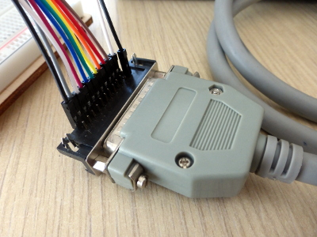

risorse | porta parallela con arduino
Attenzione: ho posto la massima cura ed attenzione nel redigere questi appunti; declino tuttavia ogni responsabilità per eventuali imprecisioni, errori od omissioni, così come declino ogni responsabilità per eventuali danni a cose, proprietà o persone derivanti dall’uso di questi contenuti.
Trovato la stampante ad aghi Facit B1200 (compatibile Epson FX-80)...
bla bla bla...
Centronix vs D-sub 25...
verificato che non servono componenti discreti in mezzo (tutto TTL)...
Da IEEE 1284 - Updating the PC Parallel Port:
When the printer is ready to receive data, it drives BUSY low. The host drives valid data on the data lines, waits a minimum of 500 ns, then pulses STROBE* for a minimum of 500 ns. Valid data must remain on the data lines for a minimum of 500 ns after the rising edge of STROBE*. The printer will receive the data and drive BUSY active to indicate that it is processing the data. When the printer has completed the data transfer, it will pulse the ACK* line active for a minimum of 500 ns and de-assert BUSY, indicating it is ready for the next data byte.
n vuol dire linea attiva bassa...
la linea Strobe va manenuta normalmente alta;
Tipico handshake Centronix
L'interfacciamento tra Arduino e il connettore D-sub 25 è costituito da un bus di 12 linee, 11 segnali più la massa:
| Signal | Arduino | D-sub 25 | |
|---|---|---|---|
| nStrobe | 2 | 1 | nero |
| Data 0 | 3 | 2 | bianco |
| Data 1 | 4 | 3 | grigio |
| Data 2 | 5 | 4 | viola |
| Data 3 | 6 | 5 | blu |
| Data 4 | 7 | 6 | verde |
| Data 5 | 8 | 7 | giallo |
| Data 6 | 9 | 8 | arancio |
| Data 7 | 10 | 9 | rosso |
| nAck | 11 | 10 | marrone |
| Busy | 12 | 11 | bianco |
| Ground | GND | 25 | nero |
Realizzazione del bus di interfacciamento
Particolare del bus lato D-sub 25
Pagina modificata il 13/06/2017
La prima stampa di prova
Il nastro è ok dopo più di 20 anni!!!
stty solo se serve!!!
$ sudo stty -F /dev/ttyACM0 ispeed 9600 ospeed 9600 -ignpar cs8 -cstopb -echo $ cat my-file.txt > /dev/ttyACM0
Pagina modificata il 13/06/2017